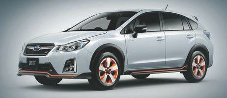
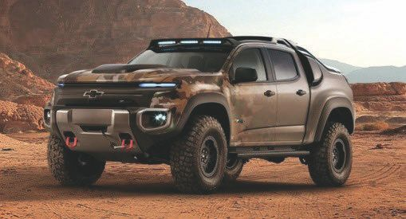

Устройство и особенности гибридных систем.
Применение гибридных автомобилей не только имеет свои преимущества, например экологические, но и преследует определенные цели действующих игроков автомобильного рынка. Компании намерены сохранить налаженное конвейерное производство двигателей внутреннего сгорания. А постоянное ужесточение норм выброса вредных веществ – лишнее тому подтверждение.
По сути, гибридные системы подразумевают использование электродвигателя как дополнительного элемента, который способствует повышению мощности и экономии топлива. Ведь все подобные машины начинают движение именно благодаря ДВС.
Гибридные системы условно можно разделить на подвиды:
• интегрированное содействие мотору;
• интегрированный генератор стартера. Система, как и предыдущая, позволяет начинать движение машине, только в этом случае используется меньший электродвигатель;
• система остановки/старта двигателя. Происходит отключение мотора, когда его мощность не используется, а затем он запускается моментально, как только это необходимо.
Различают также три вида «гибридов»:
• параллельный. В этом случае батареи передают энергию электродвигателю, а бак – топливо для ДВС. Оба агрегата способны создать условия для перемещения транспортного средства;
• последовательный. ДВС поворачивает генератор, который может или завести электродвигатель, или зарядить аккумуляторы;
• последовательно-параллельный. ДВС, электродвигатель и генератор соединены с колёсами через планетарный редуктор.
2.10.1. Типы и модели гибридных автомобилейБольшинство существующих сейчас гибридных автомобилей относится к параллельным. Хорошим решением является транспортное средство с подзарядкой. Оно открывает новые эксплуатационные возможности, нивелируя недостаток ограниченности пробега. При исчерпании заряда аккумулятора в работу вступает ДВС малой мощности.
Гибридная система существенно снижает уровень выводимых газов и увеличивает продуктивность расхода топлива, что особо актуально в условиях относительно крупного населенного пункта. А рекуперативная система аккумулирует энергию.
Управление гибридным транспортным средством похоже на управление обычным автомобилем с автоматической коробкой передач. Только в этом случае обеспечиваются низкий уровень шума, лучшая управляемость и повышенная мощность. При этом не нужно специально подзаряжать аккумуляторную батарею, это происходит при работе автомобиля.
2.10.2. Гибридные автомобили SubaruКомпания Subaru Technica International (STI), являясь подразделением гоночных автомобилей в концерне Fuji Heavy Industries, принимает предварительные заказы на инновационную модель гибридного кроссовера Subaru XV Hybridt S. Осенью 2017 года новинка уже будет в продаже в дилерских центрах Subaru в Японии.
В новой версии за базу взята Subaru XV Hybrid, после чего гибридный автомобиль получил эксклюзивный тюнинг подвески, а также своеобразное оформление экстерьера и интерьера. Гибрид был задуман с целью обеспечения комфортной поездки при любых дорожных условиях и развития навыков вождения у автовладельцев.
Отличные рабочие характеристики и высокое качество езды были получены благодаря внедрению оригинальных деталей STI, таких как гибкая буксирная тяга, настроенный амортизатор, цилиндрические пружины и прочный усилитель крепления. Специальные элементы дизайна гибридного автомобиля также создают его уникальный, отличительный от конкурентов образ. К примеру, в экстерьерной части используется оранжевая подсветка, которая протянута с переднего спойлера по литым дискам и под боковыми нижними спойлерами до заднего обтекателя крыши. Интерьер салона украшают кожаные кресла черного цвета в комбинации с элементами отделки из материала Ultrasuede черного цвета с логотипом STI и оранжевыми вставками.
Прототип гибридного кроссовера Subaru XV Hybridt S оснащен горизонтально оппозитным четырехцилиндровым двигателем FB20 объемом 2 л, 16-клапанной газораспределительной системой DOHC, активной системой управления открытием клапанов (AVCS) и электрическим двигателем. Его предельная выходная мощность составляет 110 кВт (150 л. с.), а максимальный крутящий момент – 196 Н-м.
На рис. 2.13 представлен внешний вид гибридного автомобиля Subaru XV Hybridt S.

Рис. 2.13. Внешний вид гибридного автомобиля Subaru XV Hybridt S
2.10.3. Гибридные автомобили BMWВ российские дилерские центры BMW в 2017 году поступили сразу два гибридных автомобиля от немецкого автомобильного концерна, чьи продажи объявлены открытыми. Россияне теперь смогут порадовать себя покупкой собственного гибридного кроссовера Х5 xDrive40e или седана 740Le xDrive. Вдобавок по желанию можно будет приобрести и их фирменное зарядное устройство iWallbox.
BMW EV SUV – гибрид X5 xDrive40e, оснащен четырехцилиндровым 2-литровым двигателем ДВС с турбонаддувом, электродвигателем и литий-ионными батареями. Автомобиль способен на достаточно быструю езду за счет выходной мощности системы в 308 л. с. и крутящего момента 450 Н-м.
Во время тест-драйвов Х5 xDrive40e смог разогнаться до 97 км/ч (60 миль/ч) всего за 6,5 сек., учитывая, что вес кроссовера составляет целых 2368 кг (5,220 фунта). В электрическом режиме езды на кроссовере можно разогнаться до 120 км/ч. Расход топлива составляет 3,4 л на 100 км, а пробег в электрическом режиме – около 31 км. Кроссовер на территории России продается приблизительно за 4 630 000 рублей, что по сравнению с Х5 xDrive35i с бензиновой трансмиссией на 800 000 рублей дороже.
BMW EV 740Le xDrive имеет такой же силовой привод, как и у предыдущей модели. Однако показатели выходной мощности и крутящего момента чуть выше – 322 л. с. и 500 Н-м соответственно. Скорость разгона с нулевой точки до 100 км/ч составляет 5,3 сек., а расход топлива – 2,5 л на 100 км. Максимальная скорость седана, по словам производителя, находится в пределах 140 км/ч в электрическом режиме, а в совмещенном – 250 км/ч. Новинка доступна за 6 030 000 рублей.
2.10.4. Гибридный автомобиль BYD Tang SUVВ автомобилях людям нравится мощность. Для большинства мощность означает тот эффект, когда вас «вдавливает» в сиденье при нажатии педали акселератора. Если говорить о мощности или скорости отклика электро– и двигателя внутреннего сгорания на действия водителя, то именно быстрое ускорение сделало модель S компании Tesla столь популярной. Она же сделала подключаемый (plug-in) гибрид Tang SUV китайской компании BYD самым продаваемым в своем классе и среди электрических автомобилей в Китае. Модель Tang, которая позаимствовала свое наименование от имени одной из самых процветающих когда-либо династий страны, имеет 2-литровый двигатель с турбонаддувом мощностью 205 л. с. и два электрических двигателя. Каждый из электродвигателей имеет номинальную мощность в 150 л. с.; они размещены таким образом, чтобы один приводил в движение передние колеса, а другой – задние. Шестискоростная коробка передач управляет передачей крутящего момента бензинового двигателя.
С полным включением всего привода автомобиль имеет мощность 505 л. с. и максимальный крутящий момент 820 Н-м. Это именно то, что мы привыкли называть эффектом вдавливания в кресло водителя при разгоне машине.
Для сравнения, модель Corvette Z51 с 6,2-литровым двигателем развивает мощность 460 л. с. и имеет максимальный крутящий момент 630,5 Н-м. Модель Tang может преодолеть 62 мили за 4,9 сек. Porsche Cayenne SUV с обновленной опцией Sport Chrono это же расстояние пробегает за 5,1 сек.
Tang получил вполне свежий и современный дизайн, который имеет безусловное сходство с дизайном серии Lexus RX.
2.10.5. Достоинства гибридных автомобилейЭто интересно!
BYD продвигает на рынке свой большой гибридный SUV с широким использованием терминологии «Технология 542». Цифра «5» означает ускорение за пять секунд, «4» указывает на привод на все четыре колеса, «2» представляет расход всего двух литров топлива на 100 км пробега. Суммируя все это, можно с уверенностью сказать, что Tang является не только самым хорошо продаваемым автомобилем в линейке BYD, но и одним из лучших в мире по объемам реализации.
Одной из дополнительных отличительных черт этого гибридного автомобиля является его 18-киловаттная литиево-ионно-фосфатная аккумуляторная батарея, которая может использоваться и для других целей, а не только для привода автомобиля. При парковке автомобиля ее можно подключить к работе мощного бытового оборудования, такого как электрический гриль или микроволновая печь. Такая батарея в гибридном автомобиле поистине может использоваться в различных случаях, даже как альтернативный источник электроэнергии в доме при отключении в нем электропитания.
2.10.6. Гибридные автомобили с водородными элементамиРассмотрим знаменитую армейскую версию Chevrolet Colorado – гибридного автомобиля с водородными топливными элементами. Получившее обозначение Chevrolet Colorado ZH2, модель взяла за базу шасси среднеразмерного пикапа Chevrolet Colorado с радикально измененным кузовом и множеством изменений других узлов автомобиля. Гибридный автомобиль, внешний вид которого представлен на рис. 2.14, имеет 37-дюймовые шины и усиленную подвеску.

Рис. 2.14. Вид гибридного автомобиля Chevrolet Colorado ZH2
Модель ZH2 оснащена специальным блоком питания (ЕРТО), с помощью которого можно подключать внешние приборы к топливным элементам автомобиля, что особенно актуально в районах, где полностью отсутствует инфраструктура электропитания. Универсальность использования ЕРТО является важным преимуществом автомобилей с водородными топливными элементами.
К другим явным преимуществам автомобилей с топливными элементами относятся их способность генерации чистой питьевой воды, почти бесшумная работа силового агрегата и мгновенный набор электродвигателями максимального крутящего момента.
Проект является частью совместной работы корпорации General Motors и Научно-исследовательского бронетанкового центра (TARDEC), который занимается всеми разработками армейской наземной транспортной техники. General Motors и TARDEC начали совместную работу в 2013 году с определением целей разработок новых материалов и конструкций различных типов компонентов топливных ячеек. Большая часть сборочных работ модели Colorado ZH2 выполняется в г. Уоррен (шт. Огайо) и в окрестностях Детройта (шт. Мичиган) на промышленно-исследовательских мощностях корпорации General Motors. Дополнительные испытания проведены на тестовом треке Milford Proving Ground в начале 2017 года до передачи автомобиля в армию для его годичного полевого испытания. Общий пробег 119 тестовых автомобилей в общей сложности составил 3,1 млн миль с привлечением более 5 тыс. водителей-испытателей. General Motors имеет с корпорацией Honda соглашение об обмене технологиями для объединения усилий обоих корпораций в разработке отдельных элементов технологии топливных элементов и автомобилей с их использованием. Часть этих совместных разработок и использовалась в новом внедорожнике.